📖 Đã dịch sang tiếng Việt. Thuật ngữ chuyên môn giữ tiếng Anh — rê chuột để xem nghĩa (tooltip).
Palettes
Store your favorite colors as Swatches. Create and import harmonious Palettes so the color scheme you need is always ready. Save, share, and organize palettes for later use in your Palette Library.
Swatches (các mẫu màu)
Đại diện cho từng màu đã lưu, swatch là các ô vuông màu trong một palette. Chạm bất kỳ swatch nào để đặt nó làm màu hiện tại. Bạn có thể tìm palette đang dùng hiện tại ở dưới cùng của mỗi tab Color Panel.
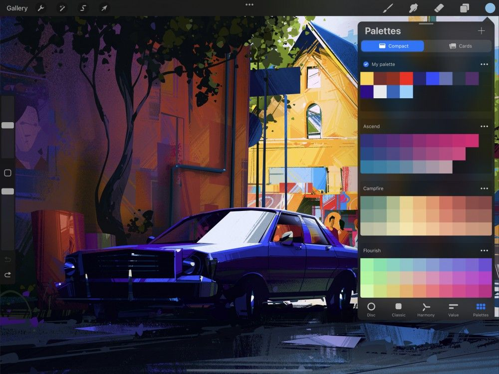
Palette kiểu Compact và Card
Bạn có thể xem Palettes theo hai cách khác nhau: Compact (gọn) và Cards (thẻ). Chuyển giữa các chế độ xem này bằng cách chạm Compact hoặc Cards ở đầu bảng Swatches.
Compact
Compact là chế độ xem Palette mặc định và có các ô swatch nhỏ. Chế độ xem này cho phép bạn xem nhiều palette và swatch hơn trên màn hình cùng lúc. Trong chế độ xem Compact, 10 swatch tạo thành một hàng palette. Mỗi ô swatch là biểu diễn hình ảnh chính xác của màu swatch.
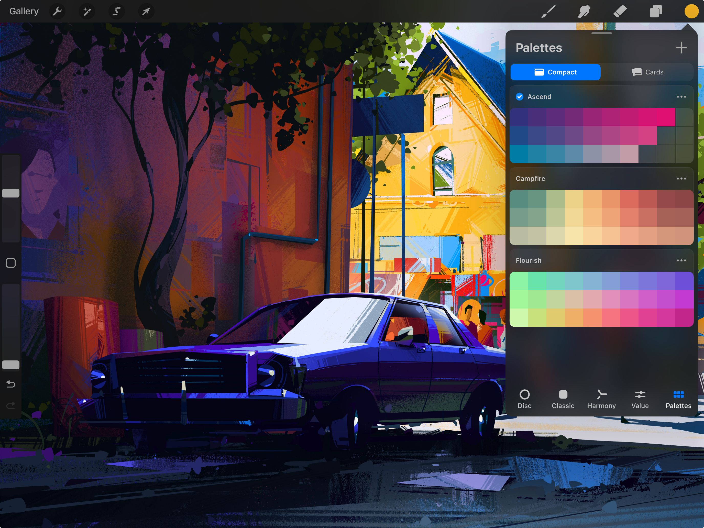

Tên palette nằm ở phía bên trái, phía trên mỗi Palette. Bất kỳ palette nào bạn đang dùng sẽ có dấu tích trong vòng tròn xanh cạnh tên palette. Để đặt một palette khác làm Active, hãy chạm bất kỳ swatch nào trong palette đó.
Cards
Cards là chế độ xem palette mở rộng hơn, có các ô swatch lớn hơn. Trong chế độ xem Cards, ba swatch tạo thành một hàng palette. Mỗi ô vuông là biểu diễn hình ảnh chính xác của màu swatch.
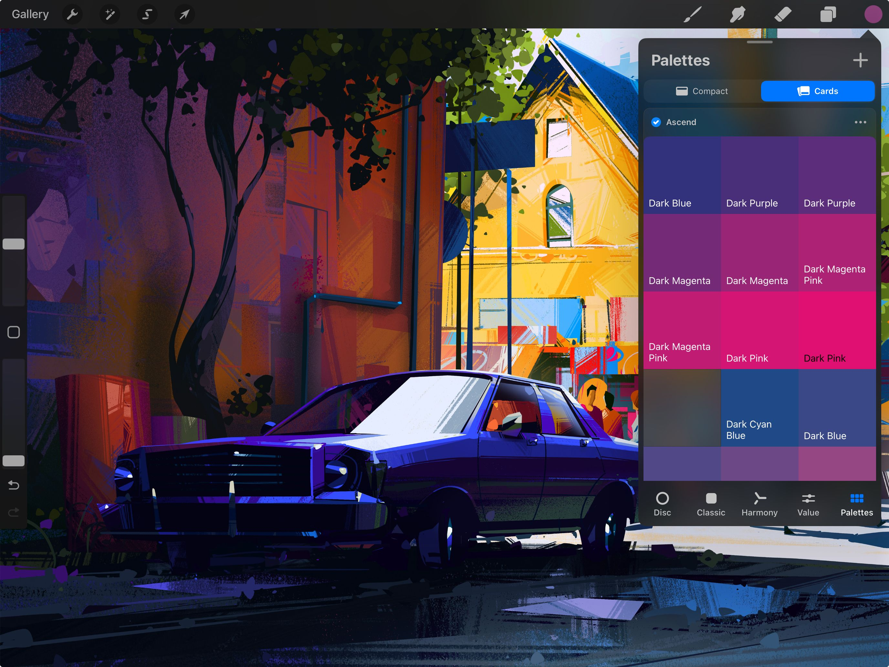
Mỗi swatch trong Cards cũng có một tên màu xấp xỉ như Blue Green (xanh lục lam). Bạn có thể đổi các tên này thành độc đáo và mô tả hơn, chẳng hạn Sea Green (xanh biển). Thực hiện bằng cách chạm vào tên swatch và đổi tên.
Tên palette nằm ở phía bên trái, phía trên mỗi Palette. Bất kỳ palette nào bạn đang dùng sẽ có dấu tích trong vòng tròn xanh cạnh tên palette. Để đặt một palette khác làm Active, hãy chạm bất kỳ swatch nào trong palette đó.
Tạo Swatch (mẫu màu)
Chạm vào một khoảng trống trong palette mặc định ở dưới cùng Color Panel để lưu màu hiện tại thành một swatch mới.
Bạn có thể thay thế các swatch hiện có nếu không còn khoảng trống trong palette. Nhấn và giữ một swatch, rồi chạm Set (đặt).
Bạn cũng có thể tự tạo palette từ đầu để có thêm không gian cho swatch. Xem bên dưới để biết hướng dẫn cách tạo palette và đặt nó làm mặc định.
Hoàn tất
Khi đã ưng ý với màu đã chọn, hãy chạm bất kỳ đâu bên ngoài Color Panel để đóng lại.
Dùng một Swatch
Để dùng một màu từ palette, hãy chạm vào nó để đặt làm màu đang chọn hiện tại.
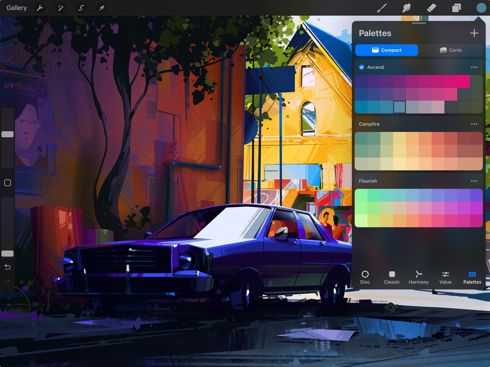
SwatchDrop (kéo thả mẫu màu)
Kéo một màu từ Swatch của Color Palette vào bất kỳ vùng nào của tác phẩm. Thả ra để đổ màu tràn vùng đó bằng màu của swatch.
Tìm hiểu thêm về cách SwatchDrop hoạt động trong phần Colors > Interface.
Sắp xếp lại Swatches
Sắp xếp lại các swatch có thể giúp bạn hình dung cách các màu khác nhau phối hợp với nhau.
Để di chuyển một swatch, hãy chạm và kéo nó đến vị trí mới. Nhấc ngón tay để thả xuống.
Đặt một Swatch làm màu hiện tại
Đặt bất kỳ swatch nào làm màu hiện tại của bạn.
Để đặt một swatch làm màu hiện tại, hãy nhấn và giữ swatch đó, rồi chạm Set current color (đặt làm màu hiện tại).
Xóa một Swatch
Giải phóng không gian bằng cách bỏ đi các màu không dùng.
Để xóa một màu khỏi palette, hãy nhấn và giữ swatch đó, rồi chạm Delete (xóa). Nó sẽ biến mất, để lại một khoảng trống.
Palette Library (thư viện bảng màu)
Một palette là một tập hợp các swatch. Procreate Palette Library cho phép bạn tạo, lưu, chia sẻ và nhập các bộ màu. Palette Library thực hiện điều này dưới dạng các palette mà bạn có thể truy cập từ bất kỳ tác phẩm nào.
Tạo Palette (bảng màu)
Để tạo Palette của riêng bạn, hãy mở Color Panel và chạm tab Palettes.
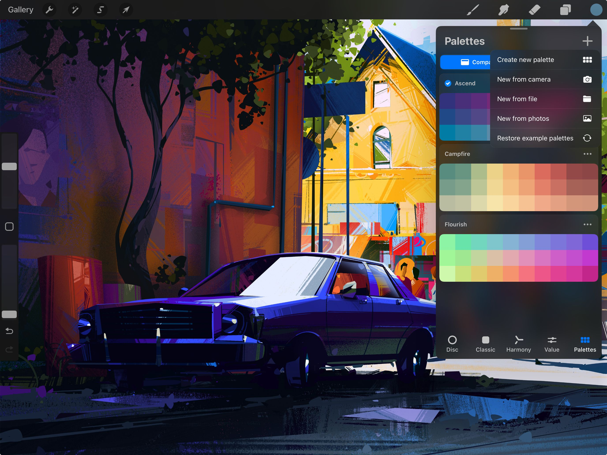
Bạn sẽ thấy biểu tượng + ở góc trên cùng bên phải. Chạm vào đó để tạo palette mới. Ban đầu, palette này sẽ trống.
Theo mặc định, palette mới của bạn sẽ được gọi là Untitled (không tên). Chạm vào từ đó để đổi tên bằng bàn phím.
Palette mới của bạn sẽ được đặt làm palette đang dùng, nghĩa là giờ nó sẽ xuất hiện trên mọi tab của Color Panel.
Đặt một Palette làm Active
Palette đang dùng xuất hiện trên mọi tab của Color Panel.
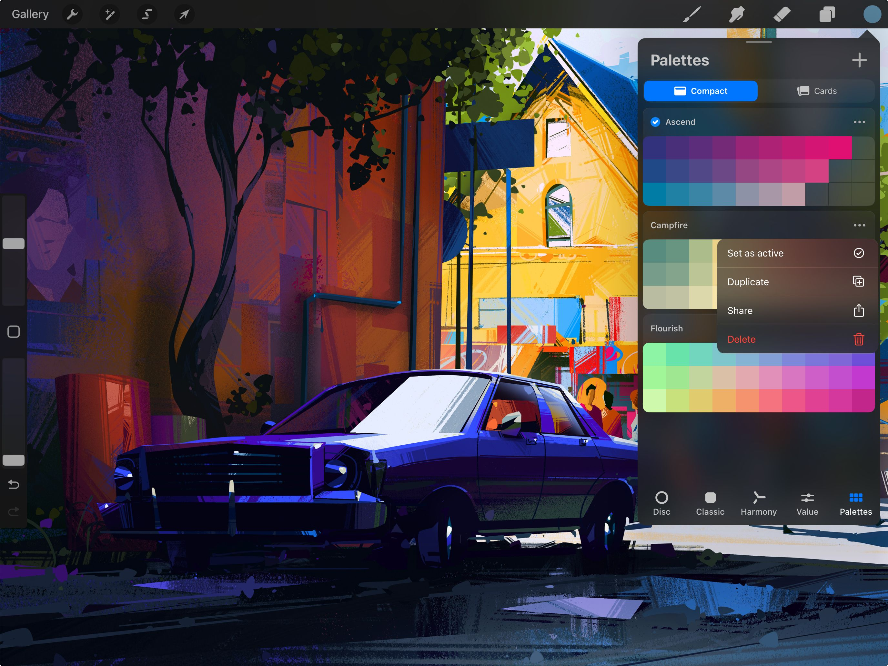

Để chọn một palette đang dùng mới trong tab Palettes, hãy chấm ba chấm bên phải tên palette để hiện nút Set as active và chạm vào.
Chia sẻ một Palette
Có hai cách khác nhau để bạn chia sẻ các palette của mình.
Trong Procreate, bạn có thể chia sẻ bằng Drag-and-Drop (kéo thả), hoặc chia sẻ từ bên trong tab Palettes. Để tìm hiểu thêm về việc chia sẻ palette, xem phần Import & Share Palettes ở dưới cùng trang này.
Nhân bản một Palette
Nhân bản một palette có thể hữu ích khi thử nghiệm màu.
Để nhân bản một palette trong tab Palettes, hãy chấm ba chấm bên phải tên palette để hiện nút Duplicate (nhân bản) và chạm vào. Palette nhân bản sẽ xuất hiện ở dưới cùng tab Palettes.
Sắp xếp lại Palettes
Ưu tiên các palette yêu thích của bạn.
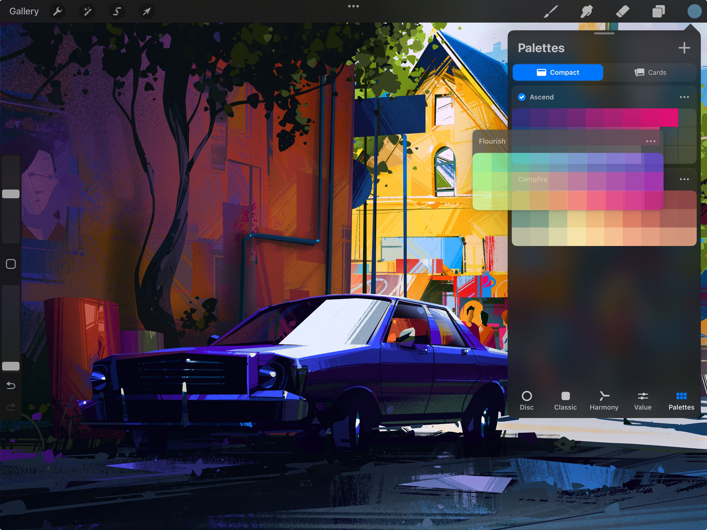
Mỗi palette có một tiêu đề ở trên cùng bên trái. Để sắp xếp lại thứ tự các palette, hãy nhấn và giữ một tiêu đề. Kéo palette đến vị trí mới trong danh sách, sau đó thả ra.
Xóa Palettes
Giữ tab Palettes của bạn sạch sẽ và ngăn nắp.
Để xóa một palette trong tab Palettes, hãy chấm ba chấm bên phải tên palette để hiện nút Delete.
Chạm Delete và xác nhận rằng bạn muốn xóa palette. Khi đã xóa, một palette không thể khôi phục lại.
Palette Capture (chụp bảng màu)
Chụp các swatch từ một tệp, ảnh hoặc trực tiếp từ camera iPad để tạo các palette tùy chỉnh của riêng bạn.
Chụp Palette từ Camera
Dùng iPad để chụp màu của bất cứ thứ gì bạn hướng camera tới.
Mở Color Panel và chạm tab Palettes để hiện các Palettes của bạn.
Chạm biểu tượng + ở góc trên cùng bên phải của Palettes và chọn New from Camera (mới từ camera). Bạn sẽ thấy bất cứ thứ gì camera đang hướng tới, kèm theo một palette swatch nằm ở giữa màn hình. Bên phải palette, bạn sẽ thấy ba nút — Cancel (hủy), Shutter (chụp) và Visual / Indexed.
Nút Visual / Indexed chuyển đổi giữa hai chế độ khác nhau. Các chế độ này ảnh hưởng đến cách Procreate xây dựng palette swatch từ thông tin hình ảnh mà camera chụp được.
Chế độ Visual (trực quan)
Chế độ Visual xây dựng palette swatch chỉ từ những gì camera chụp được ngay trước vùng palette. Tùy thuộc vào độ tương phản màu của đối tượng bạn đang chụp, điều này có thể tạo ra một dải màu tinh tế trong palette.
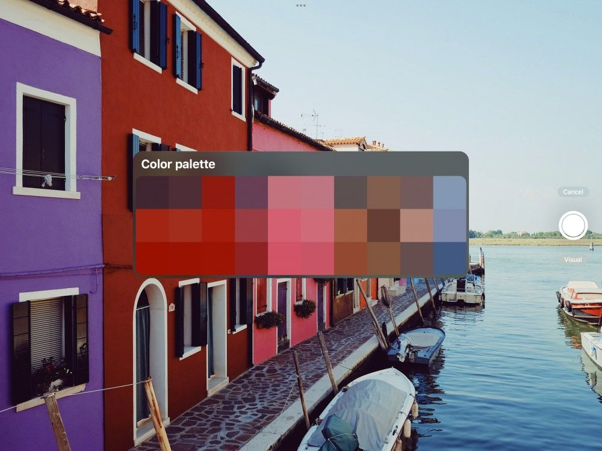
Chế độ Indexed (chỉ mục)
Chế độ Indexed xây dựng palette swatch từ thông tin hình ảnh chụp được trên toàn bộ vùng màn hình. Chế độ Indexed chụp được dải màu tương phản rộng hơn để tạo palette.
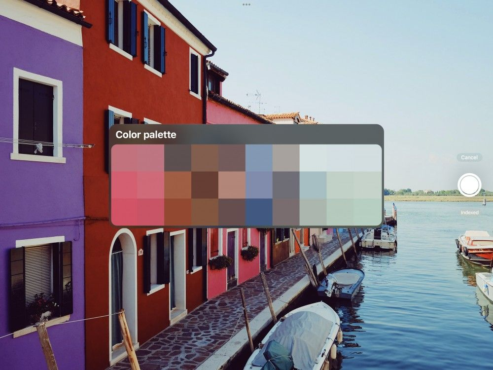
Chuyển giữa hai chế độ để thấy sự khác biệt về màu swatch mà Visual và Indexed tạo ra. Khi đã ưng với sự đa dạng màu swatch trong palette, hãy chạm nút shutter (chụp). Việc này sẽ chụp và lưu các swatch vào Palettes. Ban đầu tiêu đề palette tự tạo của bạn sẽ là ‘Color palette’. Bạn có thể đổi tên bằng cách chạm vào tiêu đề palette.
Chụp Palette từ File
Tạo palette tùy chỉnh bằng cách chụp màu từ các ảnh trong ứng dụng Files.
Mở Color Panel và chạm tab Palettes để hiện các Palettes của bạn. Chạm biểu tượng + ở góc trên cùng bên phải của Palettes và chọn New from File (mới từ tệp).
Sau khi chạm, bạn sẽ được điều hướng đến ứng dụng Files nơi bạn có thể thấy mọi tệp đã lưu. Chạm một tệp .ASE hoặc .ACO và Procreate sẽ nhập palette từ tệp đó. Tiêu đề palette sẽ là tên mà nó vốn được xuất ra. Hoặc, nếu không có tên, nó sẽ hiển thị là ‘Untitled’ và bạn có thể đổi tên bằng cách chạm vào tiêu đề palette.
Chụp Palette từ Photos
Tạo palette tùy chỉnh bằng cách chụp màu từ các ảnh trong ứng dụng Photos.
Mở Color Panel và chạm tab Palettes để hiện các Palettes của bạn. Chạm biểu tượng + ở góc trên cùng bên phải của Palettes và chọn New from Photos (mới từ Photos).
Sau khi chạm, bạn sẽ được điều hướng đến ứng dụng Photos. Chạm một ảnh và Procreate sẽ tạo một palette tùy chỉnh từ các màu được chụp trong ảnh đó. Ban đầu tiêu đề palette tự tạo của bạn sẽ là ‘Palette from image’. Bạn có thể đổi tên bằng cách chạm vào tiêu đề palette.
Import & Share Palettes (nhập & chia sẻ bảng màu)
Dùng các palette màu Adobe® hoặc palette do họa sĩ khác thiết kế. Chia sẻ palette của riêng bạn với nhiều phương pháp nhập và xuất.
Import Palettes (nhập bảng màu)
Bạn có thể nhập các palette do họa sĩ khác tạo để dùng trong tác phẩm của mình.
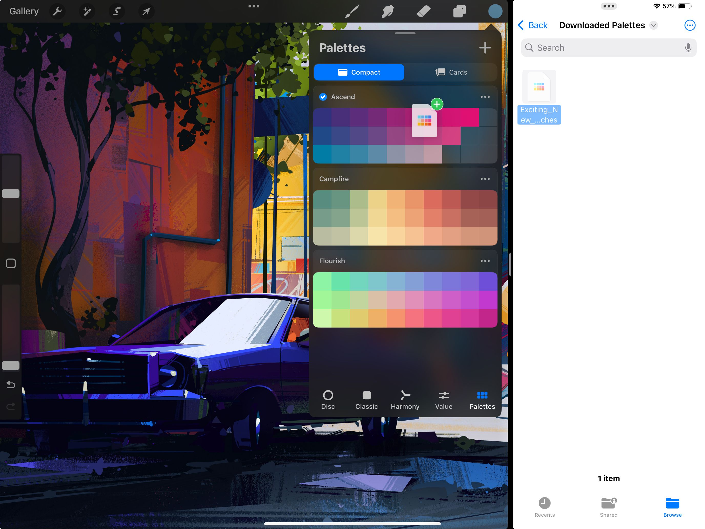
Kéo thả một tệp .swatches từ bất kỳ vị trí tương thích nào vào tab Palettes để nhập.
Nhập palette màu Adobe®
Nhập các palette Adobe®, và các palette tùy chỉnh được tạo trong các sản phẩm Adobe bởi họa sĩ khác, để dùng trong tác phẩm của bạn.
Procreate nhập tệp Adobe® Swatch Exchange (.ASE) và Adobe® Color (.ACO). Điều này cho phép bạn dùng các swatch được tạo trong cả hai định dạng này.
Mở Color Panel và chạm tab Palettes để hiện các Palettes của bạn. Chạm biểu tượng + ở góc trên cùng bên phải của Palettes và chọn New from File (mới từ tệp).
Sau khi chạm, bạn sẽ được điều hướng đến ứng dụng Files nơi bạn có thể thấy mọi tệp đã lưu. Chạm một tệp .ASE hoặc .ACO và Procreate sẽ nhập palette từ tệp đó. Tiêu đề palette sẽ là tên mà nó vốn được xuất ra. Hoặc, nếu không có tên, nó sẽ hiển thị là ‘Untitled’ và bạn có thể đổi tên bằng cách chạm vào tiêu đề palette.
Chia sẻ bằng Drag and Drop
Ngoài ra, bạn có thể chia sẻ bằng Drag and Drop.
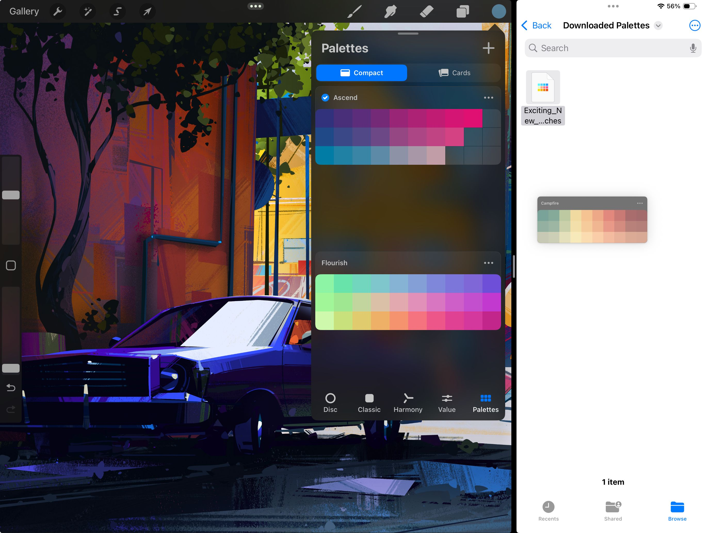
Touch và giữ một palette để nhặt nó lên, rồi kéo đến bất kỳ vị trí tương thích nào để xuất nó dưới dạng tệp .swatches. Bạn có thể xuất hàng loạt palette bằng cách nhặt một palette lên, rồi chạm các palette khác để thêm vào nhóm. Sau đó kéo nhóm đến vị trí mới mong muốn.
Chia sẻ Palettes
Chia sẻ bộ màu của bạn với mọi người.
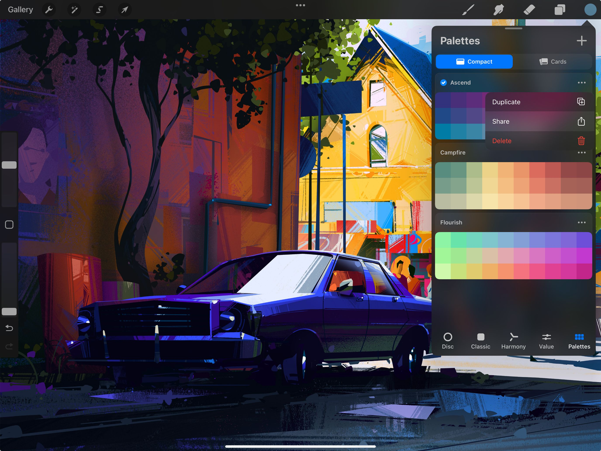
Trong tab Palettes, chấm ba chấm bên phải tên palette để hiện nút Share. Chạm nút này để mở giao diện chia sẻ của iOS. Tại đây bạn có thể chia sẻ palette đến nhiều ứng dụng và dịch vụ đám mây.
Still have questions?
If you didn't find what you're looking for, explore our video resources on YouTube or contact us directly. We’re always happy to help.